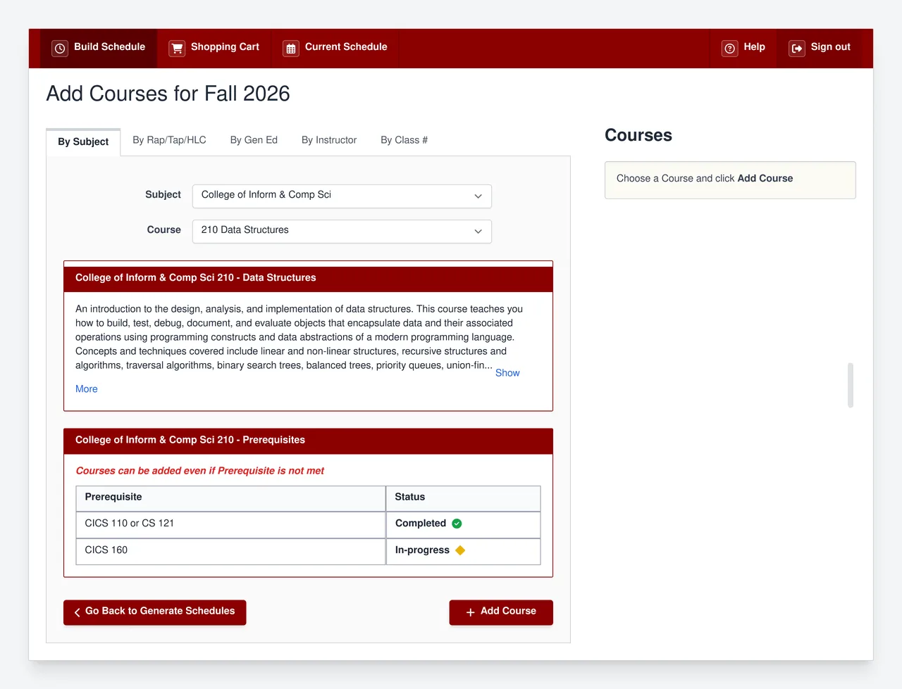
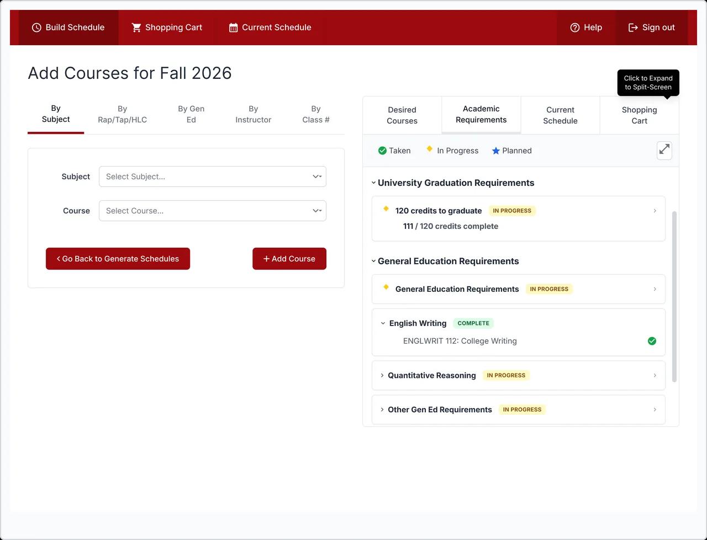
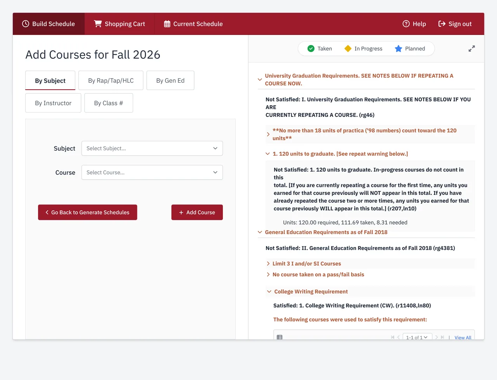
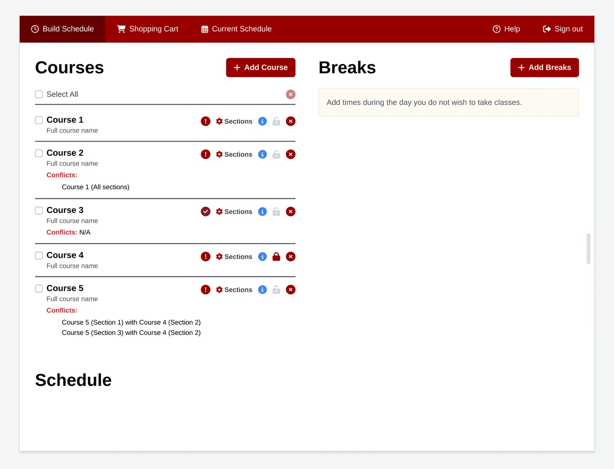
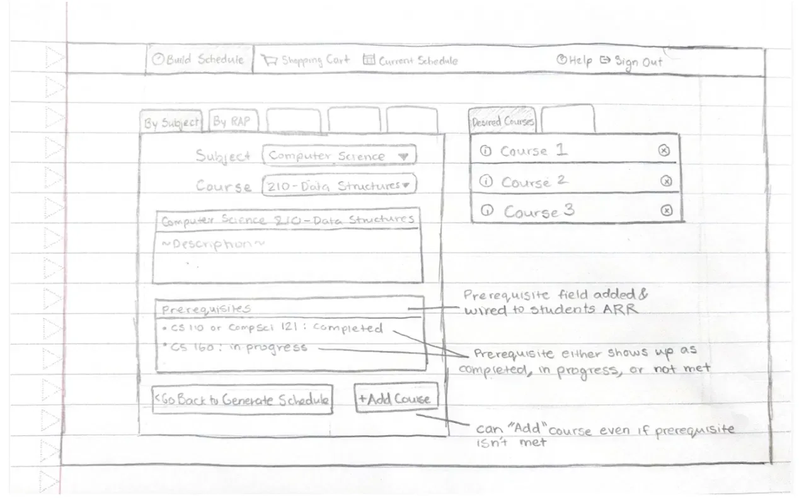
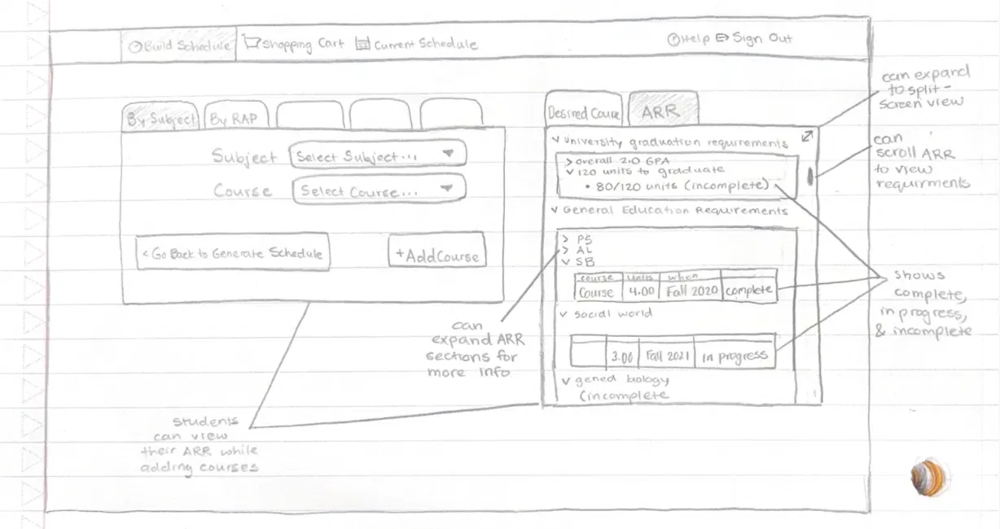
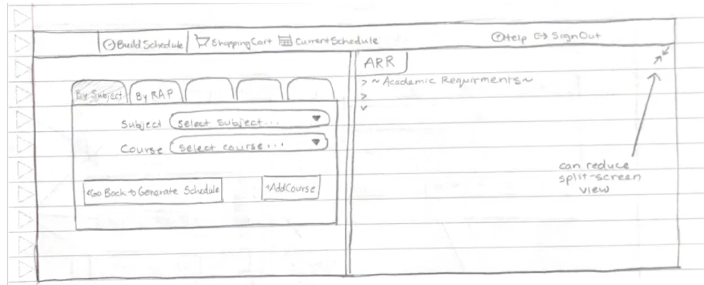
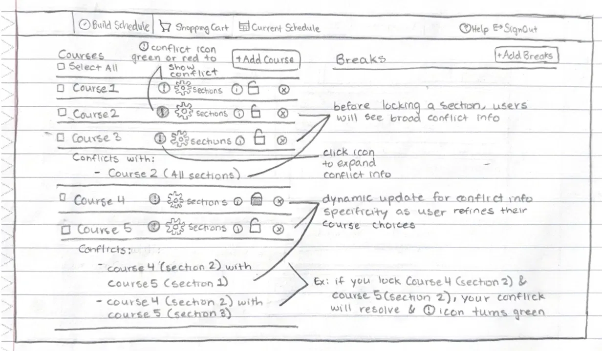

Rebuilding Schedule Builder
Every semester, roughly 24,000 UMass undergrads open Schedule Builder to register for courses. The three things they need most, prerequisites, conflicts, and degree progress, are exactly what it leaves out. I spent a semester finding out why, then redesigning what it should be.




Schedule Builder leaves the hardest parts to students.
Every semester, all 24,000 undergrads have to use Schedule Builder to register, but it won't tell you whether a course conflicts or why, whether you've met the prerequisites, or how a class fits your degree. For all of that, it sends you to SPIRE, or only tells you at the very last step. So students end up tracking the most important parts of registration scattered across spreadsheets, notes, and open tabs.
So the goal wasn't a prettier UI. It was keeping students in one place instead of five tabs and a spreadsheet.
"I wish Schedule Builder would combine itself with the ARR so we know what courses we need."
Students struggled for different reasons depending on how far into their degree they were.
I wrote the survey and interview questions, and ran four of the interviews myself. As a team we ran a 30-person survey and 9 interviews across every class year, then co-analyzed and affinity-mapped the findings together. A pattern came out of that synthesis that I hadn't expected: the problem wasn't the same for everyone. Where a student was in their degree changed what broke for them, and that split became the backbone of every design decision after.
I keep four tabs open just to register. Schedule Builder, SPIRE, my ARR, and a spreadsheet.Senior · Computer Science
It says there's a conflict but not which class. So I just guess and remove one.Freshman · Undeclared
Got lost in the interface itself, couldn't tell the shopping cart from a saved schedule, or read what a conflict meant.
Knew the tool but resented the workarounds: spreadsheets, SPIRE trips, advisor emails to confirm requirements.
Had quietly built their own systems around the tool. They'd adapted, but that adaptation was the signal. A good interface doesn't require workarounds.
- Cart vs. saved schedule look identical
- No clear starting point, "where do I even add a class?"
- Prerequisites not shown
- No degree progress in view
- Waitlists sent to SPIRE
- "Conflict" with no cause named
- Can't tell which course to drop
- Trial and error to resolve
- Personal tracking spreadsheets
- Four tabs open at once
- Advisor emails to confirm reqs
Two students, two very different problems.
What a new student needed and what a senior needed were almost opposite. An average of the two would have fit nobody, which is exactly why there are two personas and not one.
Alexis
Goals
- Build a schedule that works around her job shifts
- Understand which courses she's actually eligible to take
Frustrations
- Shopping cart and tentative schedule look identical
- Can't identify which course causes a conflict
- Leaves Schedule Builder just to check basic requirements
"I wish it would tell me what classes I should take for my major."
Austin
Goals
- See remaining requirements while building his schedule
- Handle waitlists and prerequisites without switching platforms
Frustrations
- Waitlists can't be managed inside Schedule Builder at all
- Prerequisites require a separate SPIRE page
- Maintains a personal spreadsheet to track degree progress
"I wish Schedule Builder would combine itself with the ARR."
With one semester, the first real PM decision was what to cut.
The data pointed at four friction points, and the most requested was waitlist integration. We made the call to cut it: it depended on backend changes across two separate systems, and going after it would have meant shipping nothing finished. The three features we kept all had one thing in common. Each could be solved inside the existing interface, and that became the rule everything else had to follow.
The fix I'm most proud of came later. While going through the designs against usability heuristics, I noticed our conflict icons told students apart with red and green alone. Anyone colorblind would have been stuck, and not one of us had caught it in design. Fixing it turned into one of the biggest changes between rounds.
Every feature below started as a hand-drawn wireframe and ended as a finished screen. The notes I scribbled on those sketches were the real spec, and the final designs are what they turned into.
Inline Prerequisite Information
Schedule Builder doesn't check prerequisites at all while you build. You have to confirm them yourself against your Academic Requirements Report (ARR), and the tool only catches a missing one at the very last step, when you hit Validate to register. The redesign pulls that status right into the course listing, so you see it up front. We kept the Add Course button active even when a prerequisite isn't met, since overrides are common and blocking it would lock out students who genuinely qualify.

Integrated Academic Requirements (ARR) Tab
Checking your degree progress means leaving Schedule Builder for a separate page in SPIRE and matching it up by hand. The redesign puts your requirements in their own tab inside the existing right-side panel, so you can switch between courses and requirements without ever leaving Add Course. For anyone who needs both at once, there's a split-screen view. Keeping it in one place was the whole point, since the back-and-forth was where students lost track.


Course Conflict Tracking
Schedule Builder won't tell you what's clashing. You pick courses, generate schedules, and just get fewer options, so you regenerate and guess your way to something that fits. The redesign puts a conflict icon on every course, a red exclamation or a green check, that you can expand for detail. As you lock in specific sections, the conflict info narrows from the whole course down to the exact section. The icons use shape and color together, not color alone, so they work for colorblind students too.

What testing changed at each round.
Three rounds of usability testing, with a heuristic analysis between each. What mattered wasn't the prototypes themselves, it was the decisions they pushed me to make.
Tested hand-drawn wireframes with 4 students. The "In Progress" labels confused people, and the color-only conflict icons left out colorblind users.
Rebuilt the icons with shapes alongside color, added plain-language labels, and put tooltips on the expand button. The fixes came straight from what round 1 surfaced.
Testing surfaced a better idea: showing prerequisites as a table instead of a paragraph. I'd questioned the content all along but never the format. We changed it, and it was instantly easier to read.
Round 1 surfaced a real accessibility failure: the conflict icons relied on color alone, which fails colorblind users. Adding shapes alongside color cost almost nothing to fix and should have been in scope from day one, not something testing had to catch.
Waitlist integration was our highest-demand feature (76%). We cut it: it needed backend changes across two systems, well outside our scope. Cutting the thing students wanted most was the hardest call of the project, but part of the job is turning down good ideas that don't fit.
Three fragmented tasks, consolidated in one place.
The final prototype brings prerequisite checking, degree tracking, and conflict detection into one place, so students can answer "Can I take this? Have I met the requirements? Why does this conflict?" without ever leaving Schedule Builder.
If this shipped, the main thing I'd watch is how many students finish registration without leaving the platform, since that's the behavior the redesign is trying to fix. I'd also track how long prerequisite checks, conflict resolution, and ARR lookups actually take. And before rolling it out widely, I'd run a two-week A/B test on the table format against the original list to make sure the change holds up.
Spotting a problem and deciding it's worth solving are different skills.
We started with "Schedule Builder is confusing" and reframed it as "it forces students to hold too much in their heads." That shift changed what we prioritized, and what we left out.
The prerequisite info was visible, but a user's idea to turn it into a table is what made it readable. We could build something technically correct and still fail the person using it.
Seniors had built workarounds so smooth they barely noticed the friction. The real signal came from the freshman who just couldn't figure it out.
Our conflict icons relied on color alone, which fails colorblind users. Adding icon shapes cost almost nothing and should have been in scope from day one.
The hardest part was never the building. It was deciding what was actually worth building.